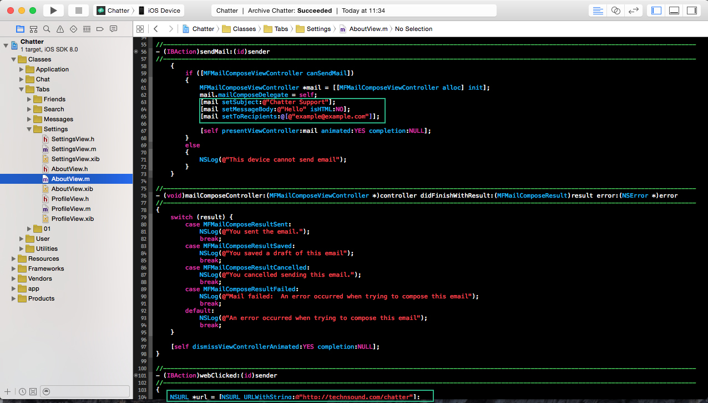

iOS 7 & iOS 8 Compatible
Created: 20/10/2014
By: Tech&Sound
Email: support@technsound.com
Chatter is an instant messaging iOS app.
Easy to customise and once you have changed the app images and settings it will ready for the App Store
Features Include:
Register/Login views
Facebook login
Basic Profile view
Change profile picture possibility
Live chat between multiple devices
No backend programming needed
Native and easy to customize user interface
Settings View
Many More
Parse.com provides a backend service to developers.
It is easy to install into apps and is free to use
Step 1:
Visit Parse.com
Step 2:
Sign up for an account (this will only take 2 minutes).
Step 3:
Once sign up is complete, you should be presented with a screen that looks similiar to the one below. Click on Settings at the top of the screen
Step 4:
Once you are on the settings tab on the left hand side you will see "Keys" link, click on it and you will be presented with a screen like the one below.
Step 5:
Now you can see your Parse app keys we can place them inside our iOS code. Open up the Chatter project in Xcode, open the "app" folder and click on "AppDelegate.m"
Step 6:
Now you are in the AppDelegate.m file you can change the app keys to the ones provided on the "Keys" screen in parse. Example Below.
Thats It!
Parse is now setup in your app
To allow your users to login via Facebook you will need to setup a developers account within Facebook
Step 1:
Register or sign in to Facebook then visit developers.facebook.com.
Step 2:
Click the "Apps" tab at the top and then "Add a New App"
Step 3:
Follow the instructions and once all is done go to your "App Dashboard" within Facebook.
Step 4:
In your dashboard you will see an app ID and an app secret code. Copy the app ID code
Step 5:
In Xcode go to "App > Supporting Files > info.plist and paste the app ID code from facebook into the value of the FacebookAppID key.
Step 6:
Now copy the same key into "URL types > Item 0 > URL Schemes > Item 0" value in the info.plist but this time put "fb" (without quotes) infront of the app ID key.
Thats It!
You should now be able to login to your app with Facebook
In the settings tab in the Chatter app you will be able to access your profile page, about app page, tell a friend and log out.
To edit the settings tab follow these simple instructions
Step 1 (Tell a Friend):
To edit the links for the tell a friend action you will need to go to the "SettingsView.m" file.
The following picture will show you which code to change to personalise it to your app.
Step 2 (About):
To edit the about page you will need to go to the "AboutView.m" file.
The following picture will show you which code to change to personalise it to your app.

To edit the layout and text of the about page you will need to edit the AboutView.xib file. Its easy to edit the text, just double click the text box and edit.
Unfortunately i cannot provide support for this product as i have a full time job so i dont have a lot of time but i will help out as much as i can. I can also make you a launch website for your app for an extra £15, contact me to discuss details.
If you would like to contact me then please email me
Thank you for purchasing this app